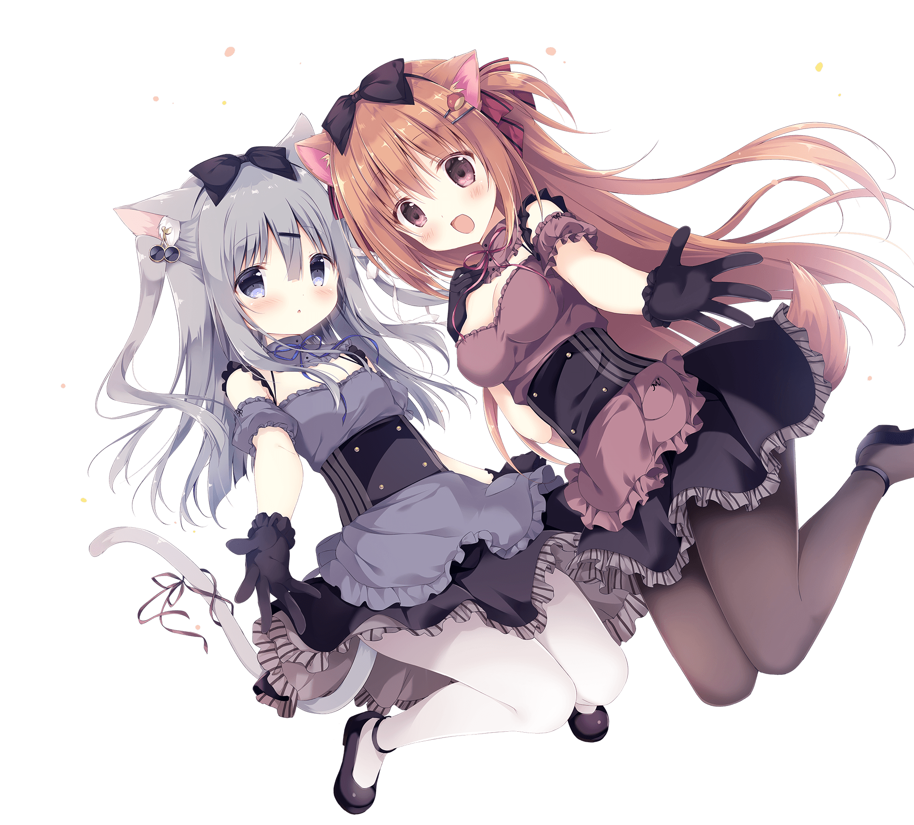
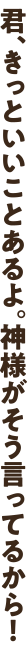

-
 


CV.藤咲ウサ
打工的前辈，俄罗斯蓝猫的兽人。 学籍比男主要小一年，却非常认真而且有责任感，想要早些成为一个合格的大人而进行着打工。个子很小却外表可爱，非常讨厌被当做小孩子对待。非常自立认真，的同时，经常会拒绝别人的好意。
俄罗斯蓝猫即便是在猫中也是最难以取悦的种类，独占欲嫉妒心强。


CV.八ッ橋しなもん
来自只有兽人居住的地方名叫“兽人之乡”的女孩。 与男主同年级，同一时间来到这里一起开始打工的女孩。天真无邪而且非常主动，好奇心旺盛，遇到好奇的事情会摇着尾巴义无反顾地向前进。在兽人之乡担当巫女，能够听到神的声音。据说来到夕渚镇，也是因为神告诉她的。
带有特征的博美犬，其中最突出的特征就是元气和黏人。

CV.月白まひる
给人软绵绵的感觉，让人想要去守护她的女孩。 给人软绵绵的感觉，让人想要去守护她的女孩。有着与态度强硬的娜娜截然不同的性格，却是她的老朋友。在无论Setaria还是Sweet Tail都由妈妈经营的店里打工。喜欢恋爱小说和少女漫画，实际上还有着难以对外人道的兴趣爱好……
聪明贤惠的贵宾犬，性格温柔体贴。

CV.朔羅ことね
元气活泼，性格强硬的少女 说话腔调非常平易近人，没有女孩样，即便是初次见面的人也会非常直率地交流。对自己身为兽人非常自豪，却不喜欢被夸「可爱」而是喜欢被夸「帅气」，所以当被夸「可爱」的时候，都会用「才不可爱呢！」来顶回去。喜欢打游戏，不问类型平台全都玩。因为莓华从过去就经常被异性骚扰，所以会像老猫一样驱逐接近她的坏人。
美国短毛猫，元气活泼，而且态度强硬